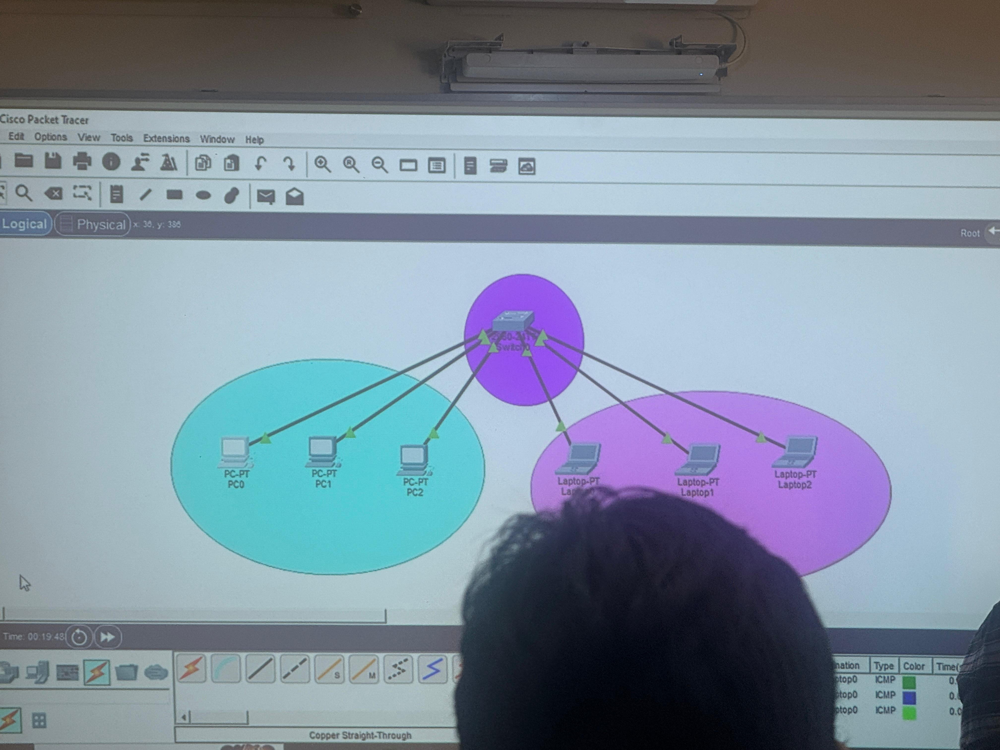
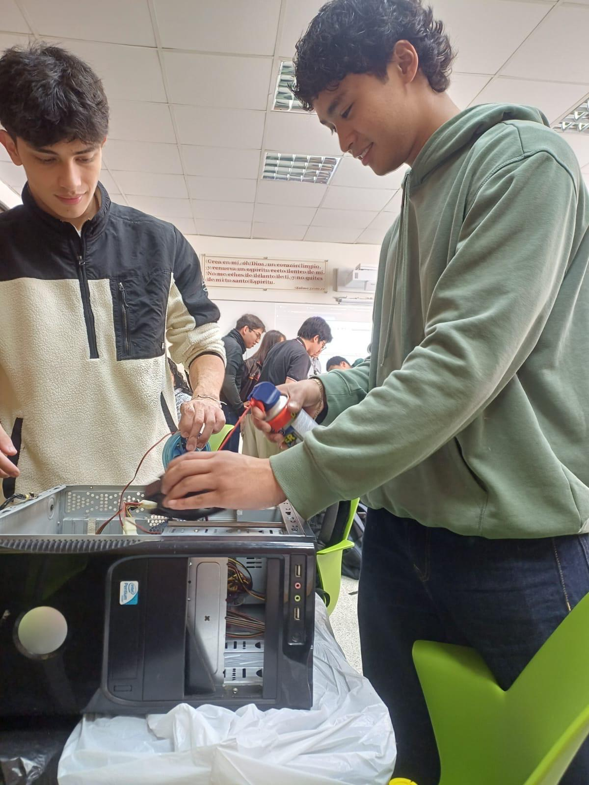
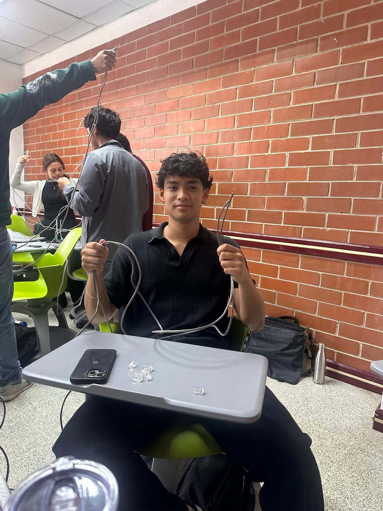
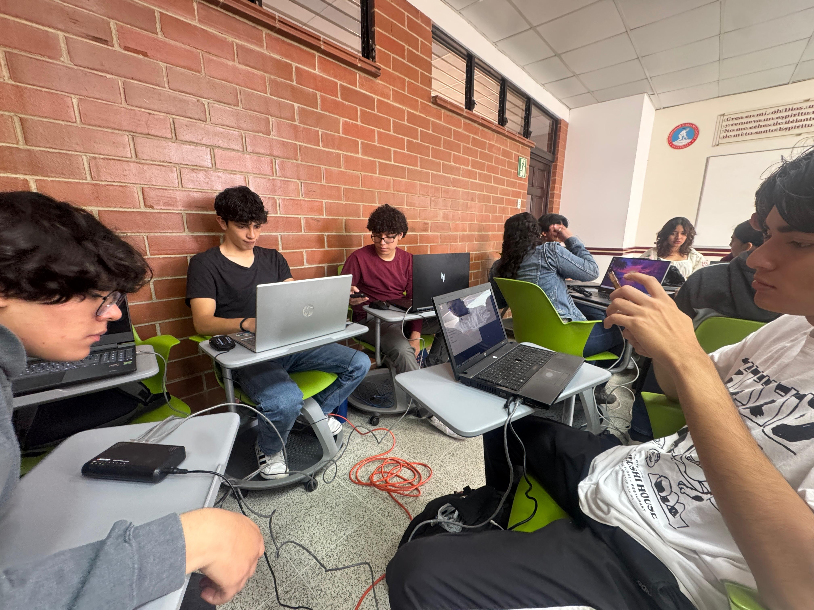
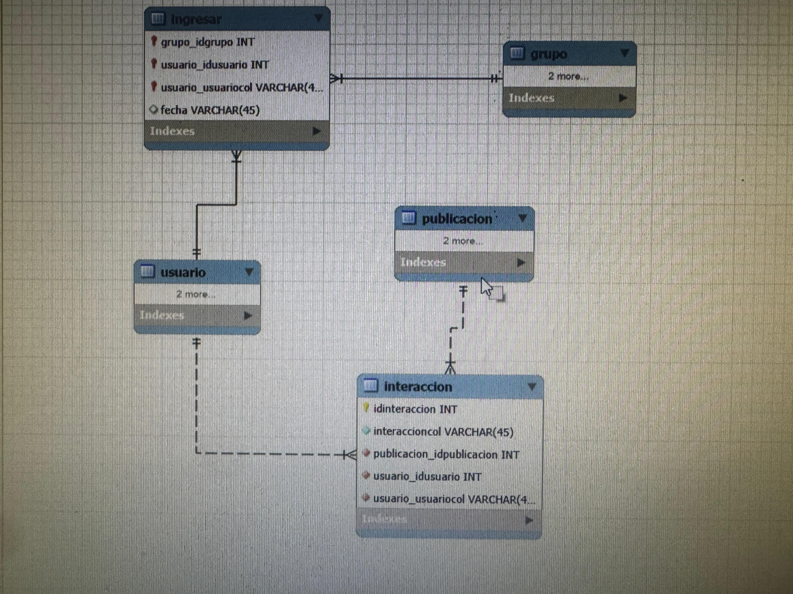

Un sistema computacional es un conjunto de elementos físicos (hardware) y lógicos (software) que trabajan juntos para recibir, procesar, almacenar y transmitir información.
Mi Experiencia en el Curso
Esta materia me dio la visión completa de lo que implica la carrera. Realizar múltiples proyectos prácticos me ayudó a conectar toda la teoría sobre hardware, redes y software con resultados reales. Fue la base perfecta para empezar a desarrollar.
Lo que he aprendido
Prácticas y Laboratorios

1. Packet Tracer
Simulación de redes y configuración de dispositivos utilizando la herramienta Cisco Packet Tracer.

2. Mantenimiento a la CPU
Desensamble, limpieza y ensamble de los componentes internos de una computadora.
3. Instalación de Ubuntu
Configuración e instalación del sistema operativo Linux Ubuntu desde cero.

4. Cables de Red
Creación de cables de red UTP (normas T568A y T568B) para la conexión de dispositivos.

5. Configuración Red LAN
Diseño de una Red de Área Local compartiendo recursos entre equipos físicos.

6. Base de Datos
Hicimos estructuración y consultas básicas en un entorno de bases de datos.
Proyecto Final del Semestre
7. Portafolio Web (Proyecto Parcial)
Este proyecto tiene como objetivo principal desarrollar un portafolio personal real que refleje las competencias adquiridas durante el primer semestre de la carrera de Ingeniería en Sistemas de Información y Ciencias de la Computación.
El sitio web está enfocado en recopilar y presentar todos los proyectos realizados en las distintas clases, mostrando de manera organizada y profesional el aprendizaje obtenido.